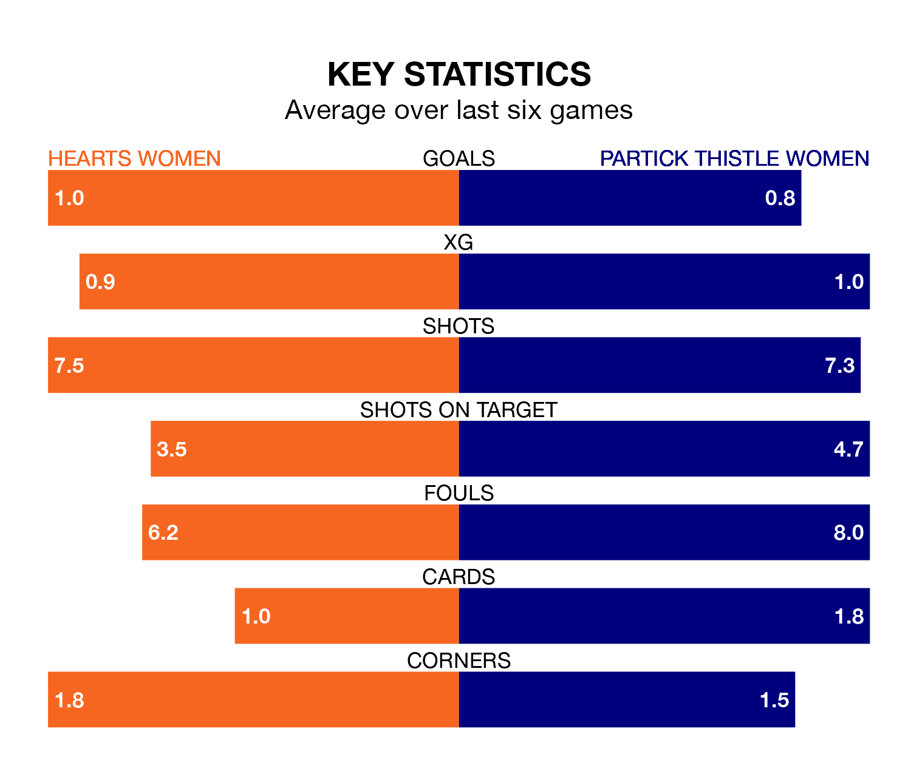

Hearts Women host Partick Thistle Women in Sunday lunchtime's match at Oriam National Performance Centre looking to bounce back from defeat last time out in SWPL 1.
Hearts, who sit fourth in the league after 28 games, fell to a 3-0 away defeat to Rangers Women on Wednesday.
They face a Partick Thistle side who picked up a win in their last match, a 3-2 victory against Hibernian Women, and who sit sixth in the table.
Hearts are in mixed form in SWPL 1, with three wins and three losses from their last six games.
With a win and five losses over that period, Partick Thistle's form is much worse – they have taken three points from 18, compared to the home side's nine.
In the last 10 years, Hearts and Partick Thistle have played each other on 11 occasions. Hearts won eight of them, Partick Thistle one, and they drew twice.
On average, Hearts scored 2.5 goals and Thistle 1.0 in those matches.
Their last meeting was on March 31, when Hearts won 3-0 away.
With 40 goals in 28 games so far this season, Thistle are scoring at below the league average rate with 1.4 goals per game. But they are conceding fewer than average too, letting in 54 goals at a rate of 1.9 per game.
Hearts, meanwhile, are above average scorers, with 2.3 goals per game, compared to a league average of 2.1. They have conceded 1.1 goals per game.
With Charlotte Parker-Smith between the sticks, Hearts can rely on one of the league's safest pair of hands. She has kept eight clean sheets in her 23 appearances this season in SWPL 1.
In the visitors' net, Ava Easdon has six clean sheets in 12 games. She has conceded a goal every 63 minutes, 10% more often than the 71 minutes between goals for Parker-Smith.
Updated: 12:00 (UTC), 02/05/24